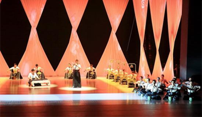
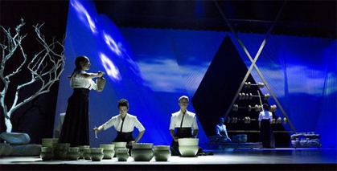
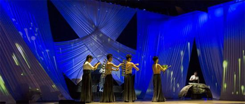
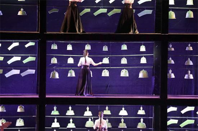

美国人的破铜烂铁乐队（stomp）一度让全世界震惊，音乐可以这么玩；韩国人的《乱打厨神》，同样走遍全世界把各地的观众看傻。舞台上的他们都尝试把锅碗瓢盆当做乐器，由此成为创举。但其实，对于千年前的中国人而言，这就不是什么稀罕事。 《诗经》中曾有“击缶而歌”，“缶”也就是酒碗。而到了唐宋时，中国人就已经把烧制精美的青瓷碗当作乐器，它音色清脆悦耳，韵味清雅精致。这种被称作“瓯乐”的演奏艺术当时活跃于民间茶楼、酒馆、梨园、乐坊及皇室贵族的厅堂，深受文人雅士青睐。 古代人称青瓷茶碗为“瓯”，“瓯乐”顾名思义就是击碗演奏，也是远古击缶之乐与水盏之乐的延续。中国历来就有以陶瓷乐器和器皿演奏音乐的传统，一千多年前的唐宋时期，青瓷盛行，而青瓷的中心正在越地。“青瓷瓯乐”，就是以“越瓯”为主奏乐器的一种艺术表现形式。 2016年，浙江慈溪上林湖后司岙唐五代秘色瓷窑址，被选为当年国家十大考古新发现之一。“越窑青瓷”再一次走进公众视野。 而事实上，早在上个世纪最后30年，浙江地区就先后出土了包括甬钟、钮钟、罄、铃等在内的各类青瓷乐器。1998年，作为唐宋时中国乃至世界瓷器生产的中心，慈溪上林湖寺龙口越窑遗址出土了30多件唐宋青瓷乐器。 已经几乎已经失传了近千年的“青瓷瓯乐”，由此再度受到世人的关注。 2018年的1月15日，一场名为《听瓷》的演出在新落成的浙江慈溪大剧院上演。这是该剧院的首场开幕演出，也是拥有千年历史的青瓷瓯乐首次尝试以一种跨界音画的方式在舞台上呈现。 经过了近20年从民间到政府的“文化接力”，兴盛于唐宋、衰微于明清的“青瓷瓯乐”得以涅槃重生。  从民间到政府，青瓷瓯乐的涅槃重生 唐代诗人方干在诗中写道：“越器敲来曲调成，腕头匀滑自轻清。” 根据史书记载，在音乐十分发达的唐宋时期，以“秘色瓷”为代表的上林越窑青瓷一度成为当时陶瓷界的代表，上林湖也成为了世界陶瓷制造中心。当时，击瓯之乐是文人墨客茶余饭后的雅兴，越窑青瓷由此成为一种乐器演奏。而在“乐府”的推动下，青瓷瓯乐曾盛行于茶楼酒馆及皇室贵族，并出现了一大批演奏大家。 但到了宋朝后期，随着其他地方制瓷技术的发展，越窑逐渐式微，青瓷瓯乐也随之衰落。据称，虽然专业的瓯乐师越来越少，但仍有不少民间艺人会敲瓯乐。直至解放前后，浙东一带还不时能在地方庙会看到瓯乐表演。 但之后很长一段时间，在宁波慈溪地区，越窑青瓷的历史被淡忘，青瓷瓯乐更是一度埋没于历史。很多当地人甚至都不知道，自己脚下的这片土地，一度曾是世界制瓷业的中心。 直到1990年代，随着青瓷乐器的出土，包括传承人章均立在内的一些民间人士，开始自发地学习和恢复传统瓯乐，摸索传统瓯乐的演奏技法。 也是在那时，青瓷瓯乐引发了一些文化人的关注。音乐家何占豪是浙江诸暨人，2001年就曾经参观了上林越窑青瓷遗址，被青瓷瓯乐文化震撼。此后十多年，一直致力于为瓯乐的“重生”出谋划策。 2002年，慈溪市建立了唐宋越窑青瓷乐器开发科研组，在越窑青瓷研究所的配合下，重新研制了一批越窑青瓷乐器。 2009年，慈溪市青瓷瓯乐艺术团正式成立，致力于瓯乐的传承保护和发展。当年，青瓷瓯乐也被列入了浙江省非物质文化遗产。 拼接起唐宋文化的碎片，青瓷瓯乐就这样在千年后重获新生。  重生之路漫漫，尝试各种形式让现代人了解接受 从2009年建团至今，青瓷瓯乐已经创作了多部作品，在各种非遗以及政府活动演出。并且多次走出国门，令海外观众大感震撼。 但在国内，青瓷瓯乐却依然籍籍无名，即使在浙江省内，所知者也并不多。 在青瓷瓯乐艺术团团长谢杰峰看来，“青瓷瓯乐”的传承传播确实有其局限和困境。无论是理论研究、乐器开发还是演奏技艺，其实都还有漫漫长路要走。 乐器的研发制造是首要的难点。史书记载，古代的瓯乐多是用青瓷碗直接敲击，每个碗音调的高低，用盛水多少的办法解决。但现代的青瓷瓯乐，如何调节音准音质，也还是个课题。目前，瓯乐团通过制作不同大小、不同厚薄的青瓷碗将音定准。而为了开发研制更多青瓷乐器种类，当地政府还在2013年专门组建了越窑青瓷瓯乐研究所。 但谢杰峰坦言，瓯乐的总体音色依然比较单调，相比其他乐器，音乐表现力也相对较弱。与此同时，演奏技巧单一也是一大问题。普通观众听一小会儿可以接受，时间长了，确实坐不住。此前，瓯乐的演出主要还是政府层面的活动，以及进校园等，在演出市场还很难有自己的空间。 十年间，乐团和政府多次请来包括音乐方面的专家，为瓯乐的发展和定位把脉，同时创作了一批瓯乐作品。除了传统瓯乐的挖掘整理和演奏之外，也尝试了多种形式的表演，诸如和民乐演奏交织在一起，但瓯乐独特的“瓷乐”特性，却又往往被淹没在民乐之中。  瓯乐音画《听瓷》同样是酝酿多年后的产物。这台演出致力于真正回归以“越瓯”为主奏乐器本身，同时通过舞蹈、多媒体等方式，让观众感受一次与众不同的“瓷乐”艺术。整台演出邀请了来自全国各地的主创，在视觉和质感上，都有着完全不同于以往瓯乐或者单纯民族音乐的追求。 从去年底的首次试演到最近在慈溪大剧院的首演，这一带着创新形式的“瓯乐”演出赢得了当地观众的一致喜爱，演出每次都一票难求。谢杰峰说，瓯乐音画这样的形式，就是希望能让普通观众接受瓯乐，并进而去了解它。 首演之后，当地政府特地组织了一次研讨会，包括关注了瓯乐近20年的作曲家何占豪在内，来自全国的音乐界专家纷纷对瓯乐的发展提出了自己的想法。究竟是让瓯乐变得更纯粹、更复古，还是让瓯乐变得更丰富、更为现代观众接受，依然还在探讨之中。 谢杰峰透露，未来他们还会尝试别的形式，诸如结合旅游，以青瓷瓯乐博物配合演奏等方式，让更多人来了解瓯乐艺术的历史和价值。 无论瓯乐未来走一条怎样的路，这一让人梦回大唐的千年瓷乐，正在重放光彩的复兴之路上前行。 